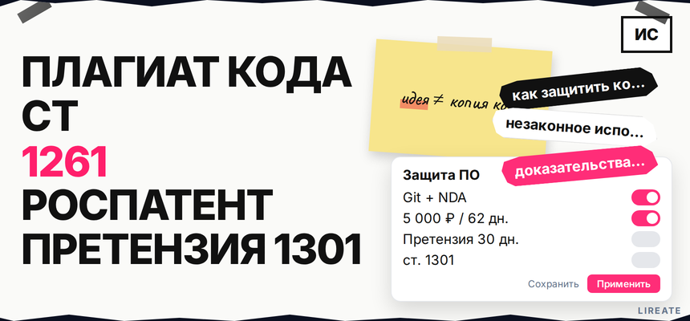

Запрос "как защитить компьютерную программу от плагиата" часто уводит в антиплагиат дипломов или пиратские ключи, хотя речь о вашем исходном коде десктопа или SaaS. По ст. 1261 ГК РФ код охраняется как литературное произведение, но идею без копирования текста суд часто не признает нарушением. Ниже вы соберете пакет git, договоров и депонирования, отличите клон функционала от воровства кода и оформите претензию до арбитража.

TL;DR / Быстрый инсайт: Программа для ЭВМ - это текст исходного и объектного кода в объективной форме (ст. 1261); право возникает при создании, регистрация в Роспатенте по ст. 1262 добровольная (пошлина 5 000 ₽, срок услуги 62 рабочих дня, страница услуги). Роспатент не проверяет уникальность кода - свидетельство фиксирует экземпляр на дату, а не "запрет конкурентам". Без отчуждения прав у подрядчика вы можете не иметь полномочий защищать репозиторий. При споре нужны доказательства факта копирования, а не только "похожий результат".
Для основателя продукта и in-house юриста. Нормы сверены на 04.11.2026; это чек-лист, не индивидуальная консультация. Обзор инструментов ПО и БД - в материале о правовых методах защиты программы и базы данных; здесь маршрут "git и договоры → депонирование → претензия по ст. 1301".
Программа для ЭВМ - исходники, объектный код и подготовительные материалы в форме, которую читает компьютер (ст. 1261). С 01.01.2027 формулировка расширится (ФЗ № 296-ФЗ) - зафиксируйте версию в реферате при депонировании.
По п. 5 ст. 1259 ГК РФ не охраняются идеи и способы решения задачи. Повтор функционала своим кодом часто законен (Habr). Не путайте похожий интерфейс и копирование исходников.
| Ситуация | Это про ст. 1261? | Что делать |
|---|---|---|
| Совпали блоки исходного кода, комментарии, структура файлов | Да, если докажете копирование | Фиксация, сравнение, претензия, ст. 1301 |
| Тот же сценарий, другой стек и тексты модулей | Чаще нет (идея/функция) | Патент на техническое решение, ТЗ, договорная защита |
| Антиплагиат текста статьи или диплома | Нет (другой объект) | Не смешивать с защитой ПО |
| Пиратская раздача вашего инсталлятора без лицензии | Да, но спор о лицензии | EULA, претензия, иной расчет убытков |
Делайте: в споре формулируйте объект как фрагменты кода и версии, а не "наш продукт целиком". Не делайте: требовать запрета "любого похожего SaaS" только на авторском праве на код.
Право на код у автора, пока не оформлено отчуждение в договоре (кому принадлежит код). NDA прикрывает тайну, но не передает исключительное право. В SaaS ограничьте доступ к Git и отзывайте права подрядчику в день приемки (чек-лист до релиза).
Делайте: проверить цепочку прав до публикации в GitHub или маркетплейсе плагинов. Не делайте: полагаться только на "мы платили, значит код наш" без пункта об отчуждении.
Регистрация добровольна (ст. 1262), одна заявка - одна программа, экспертиза без проверки уникальности кода (разбор мифа). Пакет: заявление, реферат, фрагмент исходного текста (п. 27 приказа № 211); на практике - порядка 50 страниц PDF/A (FAQ Роспатента).
Делайте: депонировать стабильный релиз с номером версии в реферате. Запись в реестре считается достоверной, пока не доказано иное (п. 6 ст. 1262). Не делайте: ждать, что свидетельство запретит конкурентам писать похожий сервис на другом коде.
Суды смотрят git, ТЗ и переписку; нотариальный осмотр репозитория усиливает пакет (практика судов). Нотариат - дополнение к договорам, не замена.
Цепочка фиксации версии:
Релиз в git с тегом → архив tarball с hash → (опционально) депонирование в Роспатенте или нотариат → запись в реестре Минцифры для льгот (отдельная цель, не заменяет договоры)
Делайте: запретить force-push в main и хранить code review. Публичный фрагмент в portfolio подрядчика без лицензии - частый канал утечки. Не делайте: считать облачный бэкап единственным доказательством без привязки к автору коммита.
При "клоне" зафиксируйте выгрузку, hash файлов, сравнение фрагментов и дату. Нужны совпадения кода и след доступа, не только похожие кнопки (спор о коде). Делайте: экспертную таблицу по файлам. Не делайте: процент совпадения без методики (претензия по ПО).
В арбитраже между юрлицами и ИП - претензия (п. 5.1 ст. 1252), затем иск после отказа или 30 дней молчания. Компенсация по ст. 1301: 10 000-10 000 000 ₽ или двойная стоимость экземпляров или лицензии.
Делайте: направить претензию до иска о компенсации. Не делайте: требовать "удалить похожий функционал" без доказательств копирования кода.
Мобилка, сторы и ТЗ - в материале о регистрации мобильного приложения; здесь - десктоп и SaaS.
Маршрут правообладателя ПО:
Ст. 1261 (что охраняется) → договоры и git → (опционально) Роспатент → мониторинг → доказательства копирования → претензия по 1252.1 → ст. 1301
Итоговый вердикт: Роспатент дает дату депонирования, не "иммунитет от клонов". Патент - для технического решения, не для текста кода (обзор). Спор - к поверенному; на Лирейт - пакет на ПО и претензия, рубрика "Программа ЭВМ".
Материал проверен: эксперт Елена Ковалева (главный эксперт по SEO/GEO), редакция Лирейт.
Достоверность данных: ст. 1259, 1261, 1262, 1252 и 1301 ГК РФ, страница услуги Роспатента по регистрации ПО и профильные разборы сверены на 04.11.2026. Показы Яндекс Wordstat в среде подготовки материала не запрашивались.
Нет. Авторское право возникает при создании (п. 4 ст. 1259 ГК РФ). Регистрация по ст. 1262 добровольна и фиксирует сведения в реестре; она не блокирует конкурентам разработку похожего функционала на другом коде.
Антиплагиат ищет совпадения в текстах статей и работ. Здесь объект - исходный код программы для ЭВМ. Другие инструменты, другие доказательства и другие нормы ГК РФ.
Нет. Свидетельство фиксирует дату депонирования и формальные сведения; в споре сравнивают фрагменты и доказывают доступ нарушителя к вашему коду (пределы регистрации). Git и договоры часто важнее записи в реестре.
Да: закройте репозиторий, договоры с dev и доказательства копирования серверной части или выгруженных скриптов. Публичный API без лицензии - отдельный риск.
Объект и версию программы, вашу цепочку прав, конкретные действия нарушителя и расчет по ст. 1301; процент совпадения без экспертной методики не заменяет юридический вывод (структура претензии).
Авторское право охраняет текст кода. Патент на изобретение - техническое решение с новизной; оформление UI и названия продукта - часто товарный знак и иные объекты, не подмена ст. 1261.
Откройте материал о регистрации мобильного приложения - сторы, МКТУ и две заявки там, не в этом чек-листе.